Inagawa, Hyogo: things to do, food and stays
Inagawa · Hyogo
Inagawa
Highlighted on the Hyogo map.
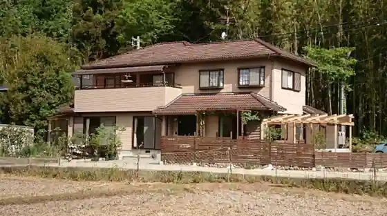
Stay
ウィズ ナチュレ／民泊
Uizu Nachure / Minpaku
ＨＯＴＥＬ ＧＥＮ
HOTEL GEN
Dining
道の駅 いながわ そばの館
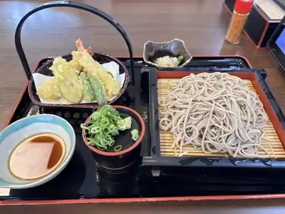
Michi No Eki Inagawa Sobano Kan
トリトン
Toriton
パッソアパッソ
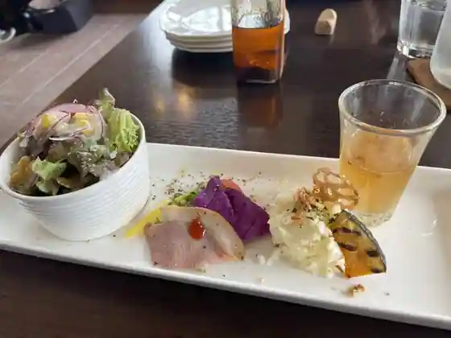
Passoapasso
ブランジュリーラボンダンス
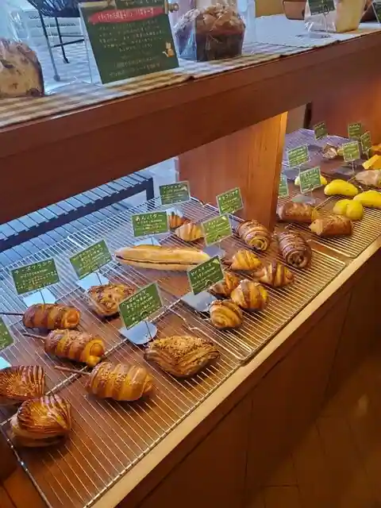
Buranjurirabondansu
SUMI TERRACE BBQ 猪名川
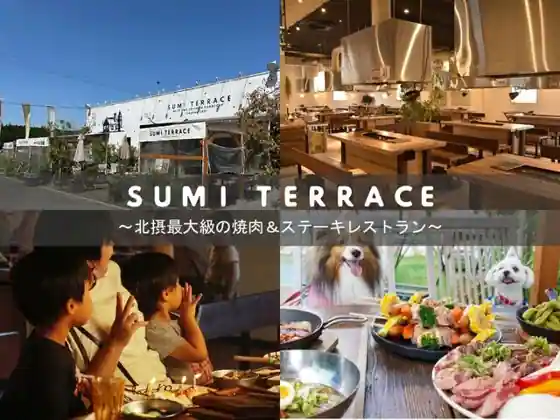
SUMI TERRACE BBQ Inagawa
道の駅 いながわ
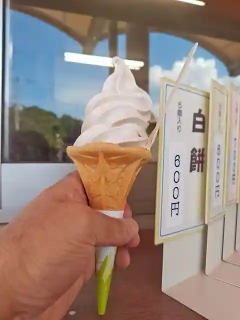
Michi No Eki Inagawa
猪名川国際カントリークラブ レストラン
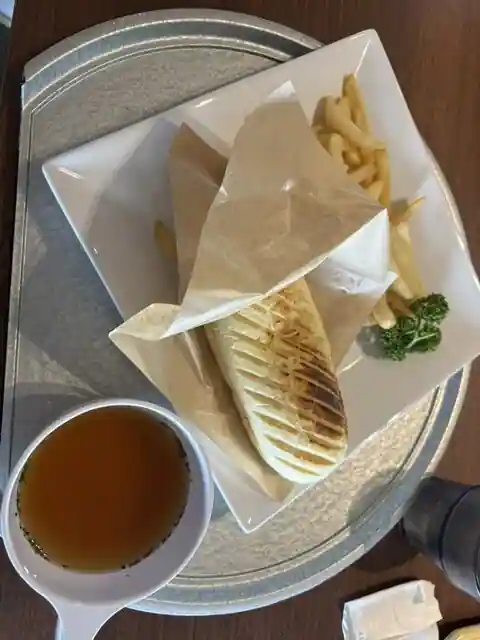
Inagawa Kokusai Kantorikurabu Restaurant
里の家
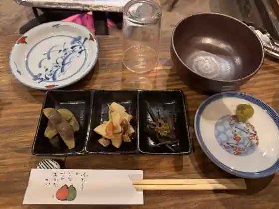
Sato No Ie
カフェ マンナ
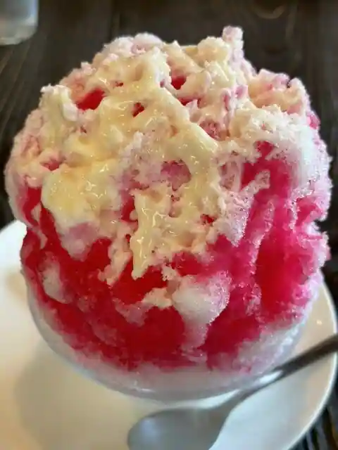
Cafe Manna
ベーカリー＆カフェ コンネ
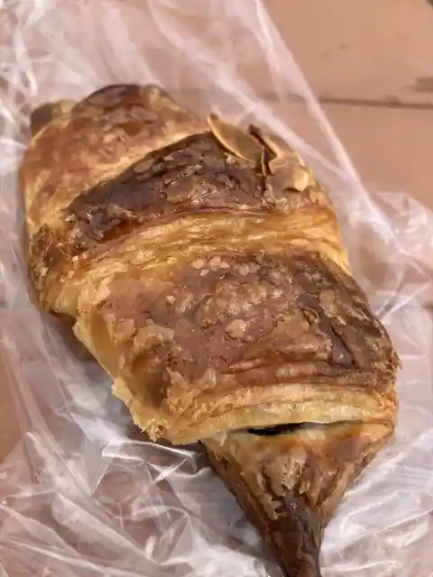
Bakery & Cafe Konne
猪名川グリーンカントリークラブ レストラン
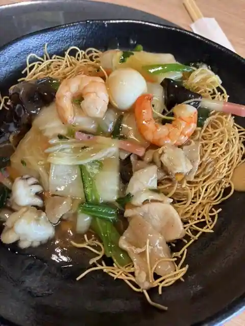
Inagawa Gurinkantorikurabu Restaurant
うなぎの里 萬鰻亭 猪名川店
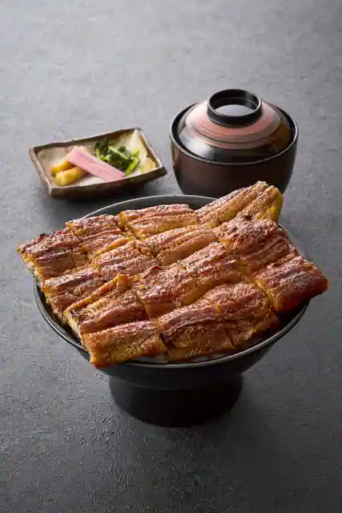
Unagino Sato Man Unagi Tei Inagawa
珉王 猪名川店
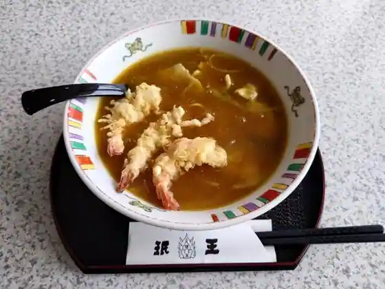
Inagawa
手打麺匠 ぎんざん イオン猪名川店
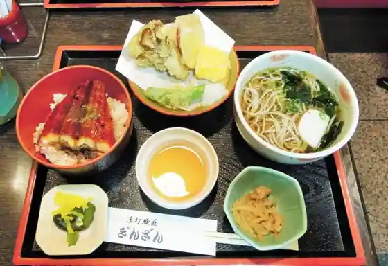
Teuchi Men Takumi Ginzan Ion Inagawa
プーランク
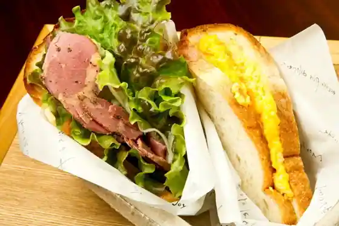
Puranku
そばこころ 日生中央店
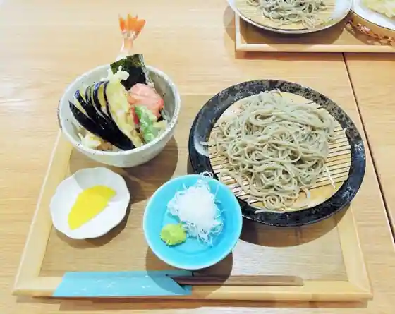
Sobakokoro Nissei Chuo
パネッテリーア トリトン
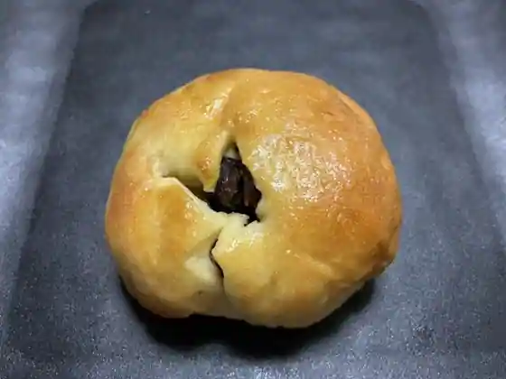
Panetteria Toriton
想月
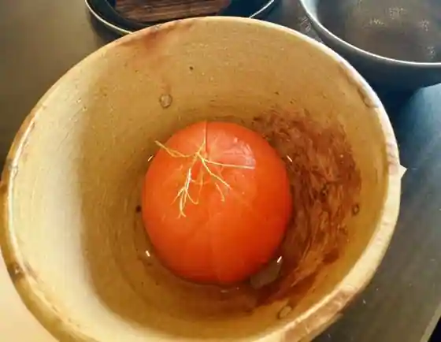
So Gatsu
仲しい茸園
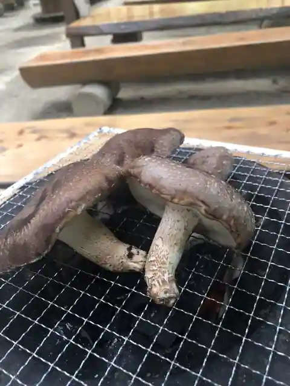
Naka Shi Take Sono
ふぁみぐりあ
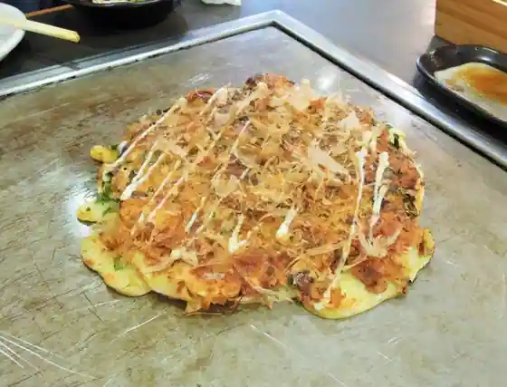
Famiguria
ちまこま喫茶
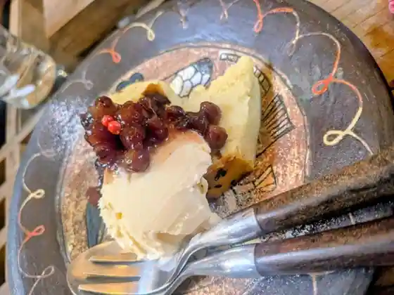
Chimakoma Kissa
空からこんぺいとう
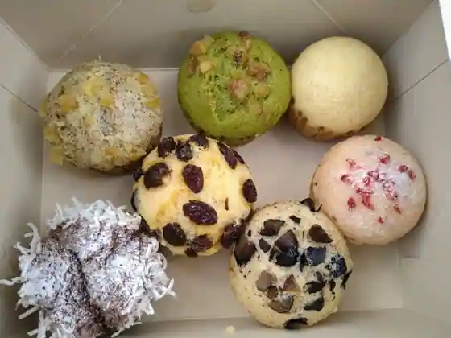
Aka Rakonpeito
イタリアンジェラート
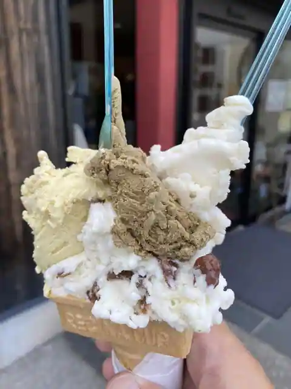
Itarianjierato
サンエトワール 猪名川店
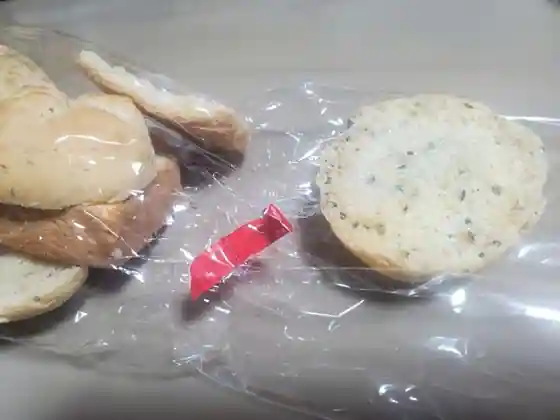
San'Etowaru Inagawa